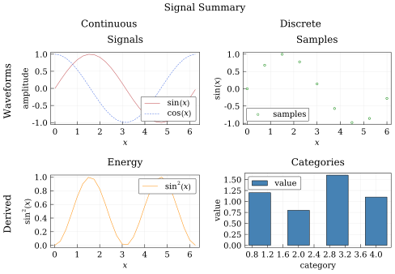

ChartGrid Tutorial
ChartGrid arranges charts into rows and columns. By default it sizes itself from the child figures, using the widest child in each column and the tallest child in each row. It is useful for comparing related plots while keeping each child chart responsible for its own axes, series, and legend.
Build Child Charts
Create the child charts first. Each child can use its own labels, limits, and legend placement.
using QuickCharts
x = collect(0:0.25:2π)
signal = Chart(
title = "Signals",
background = :white,
xlabel = "`x`",
ylabel = "amplitude",
legend = :bottom_right,
)
add_line(signal, x, sin.(x); label = "`sin(x)`")
add_line(signal, x, cos.(x); color = :royal_blue, line_style = :dash, label = "`cos(x)`")
energy = Chart(
title = "Energy",
background = :white,
xlabel = "`x`",
ylabel = "`sin^2(x)`",
legend = :top_right,
)
add_line(energy, x, sin.(x).^2; color = :dark_orange, label = "`sin^2(x)`")
samples = Chart(
title = "Samples",
background = :white,
xlabel = "`x`",
ylabel = "`sin(x)`",
legend = :bottom_left,
)
add_scatter(samples, x[1:3:end], sin.(x[1:3:end]); color = :green, label = "samples")
bars = Chart(
title = "Categories",
background = :white,
xlabel = "category",
ylabel = "value",
legend = :top_left,
)
add_bar(bars, 1:4, [1.2, 0.8, 1.6, 1.1]; color = :steel_blue, label = "value")BarSeries(n=4, label="value", line_width=0.5, order=1)Place Charts in a Grid
Use add_chart(grid, chart, (row, column)) to place each child. Rows and columns are one-based, and the grid grows to fit the largest occupied row and column. When size is omitted, the final figure dimensions are derived from the natural row and column sizes.
grid = ChartGrid(
title = "Signal Summary",
background = :white,
column_headers = ["Continuous", "Discrete"],
row_headers = ["Waveforms", "Derived"],
hgap = 10.0,
vgap = 10.0,
)
add_chart(grid, signal, (1, 1))
add_chart(grid, samples, (1, 2))
add_chart(grid, energy, (2, 1))
add_chart(grid, bars, (2, 2))
save(grid, "tutorial-chart-grid.svg")
Child chart backgrounds are ignored while drawing inside a grid. The grid background supplies the page fill, while each child keeps its own axes, series, legend, and annotations. Pass size=(...) when you want the grid to keep a specific overall size and scale its row and column tracks proportionally.
Nested Grids
A ChartGrid can also be placed inside another ChartGrid, which is handy when one panel needs its own sub-layout.
left = ChartGrid(
title = "Trigonometry",
font_size = 12.0,
background = :white,
column_headers = ["Signal", "Energy"],
hgap = 8.0,
)
add_chart(left, signal, (1, 1))
add_chart(left, energy, (1, 2))
nested = ChartGrid(
title = "Nested Layout",
size = (18cm, 9cm),
column_headers = ["Grouped Charts", "Bars"],
background = :white,
)
add_chart(nested, left, (1, 1))
add_chart(nested, bars, (1, 2))
save(nested, "tutorial-nested-grid.svg")Use nested grids sparingly: they are best when the grouping itself communicates structure, not just to squeeze more plots onto a page.